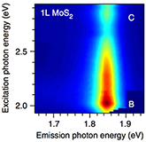

Research
Many chemical compounds and elemental substances naturally crystallize in a van der Waals layer structure. When isolated, their individual layers are effectively “two-dimensional (2D)”, having thicknesses of no more than a few atoms. Examples of 2D materials include graphene, phosphorene, monolayers of transition metal chalcogenides and organic-inorganic perovskites. Our research focuses on exploring and exploiting the unusual physical and chemical properties of such 2D materials with a vision to developing novel technologies in energy, sensing, and computing applications. |
|
 |
Nano-photonics
2D semiconductors are unique optical materials that exhibit the characteristics of molecules as well as bulk semiconductors. Their strong excitonic character and tunability make them attractive for unconventional electro-optic devices. |
|
 |
Mesoscopic transport
Electrons travelling within a 2D crystal lattice carry multiple quantum degrees of freedom that can be manipulated by external signals. We utilize magneto-transport measurements to probe the dynamics of these information carriers. |
|
 |
Nano-architecture engineering
Integration of intelligently designed nanostructures is key to the development of practical devices with tailored functionalities. We develop methods to grow and implement 2D materials into atomically defined architectures. |
|
 |
Phase engineering
Layered compounds occur in various polytypes and polymorphs with distinct electronic properties. We investigate phase transformation mechanisms with the aim to developing catalytically active materials and switching devices.
|
|

|
Some of the recent developments of the field are summarized in our Review and Perspectives articles:
- H. Schmidt, F. Giustiniano, and G. Eda, “Electronic transport properties of transition metal dichalcogenide field-effect devices: surface and interface effects” Chem. Soc. Rev. Advance Article (2015).
- W. Zhao, R.M. Ribeiro, and G. Eda “Electronic structure and optical signatures of semiconducting transition metal dichalcogenide nanosheets” Acc. Chem. Res. 48, 91 (2015).
- G. Eda and S. Maier “Two-Dimensional Crystals: Managing Light for Optoelectronics” ACS Nano 7, 5660 (2013).
- M. Chhowalla, H.S. Shin, G. Eda, L.-J. Li, K. P. Loh and H. Zhang “The chemistry of two-dimensional layered transition metal dichalcogenide nanosheets” Nature Chem. 5, 263 (2013).
- G. Eda and M. Chhowalla “Chemically derived graphene oxide: Towards large-area thin film electronics and opto-electronics” Adv. Mater. 22, 2392 (2010).
- K. P. Loh, Q. Bao, G. Eda, and M. Chhowalla “Graphene Oxide as a Chemically Tunable Platform for Optical Applications” Nat. Chem. 2, 1015 (2010).
- G. Eda and M. Chhowalla “Graphene patchwork” ACS nano 5, 4265 (2011).
|